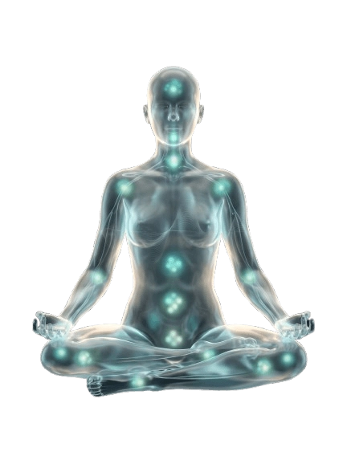

Sound Therapy
The art of inner silence
When words are no longer enough, sound comes to the rescue.
This is a practice where the vibrations of Himalayan singing bowls gently release deep physical tension and return the mind to a long-awaited state of stillness.
How Sound Heals
Sound healing (sound therapy) is the practice of using sound and vibrations to restore balance in the body, mind, and emotions.
It is based on the idea that sound affects not only our hearing but our entire organism. This occurs through dense vibrations that travel through the tissues, bones, and fluids of our body at a cellular level.
Texts that have survived to this day testify that in the traditions of various cultures, the therapeutic use of sound was based on the understanding that vibrations are the fundamental creative force of the Universe. In India, they say: Nada Brahma — "The Sounding Universe".
Today, this ancient wisdom finds its validation in the scientific works of prominent researchers.
Physical Body
- • Relieves spasms and deep muscle blocks.
- • Improves blood circulation, lowers blood pressure, and strengthens immunity.
- • Accelerates cellular metabolism, flushing out toxins and triggering rejuvenation.
- • Helps with digestive disorders and joint discomfort.
Nervous System
- • Synchronizes the work of the right and left brain hemispheres.
- • Helps break out of deep anxiety and depression.
- • Shatters old limiting behavioral patterns.
- • Induces deep sleep and cures insomnia.
Energy and State
- • Balances the chakra system and clears the aura.
- • Helps release past emotional traumas.
- • Unlocks creative potential and hidden talents.
- • Restores a state of serenity and joy.
"The best part of using singing bowls for healing and balancing is that the process itself requires absolutely no effort from you. It is simply incredibly pleasant and deeply relaxing."
Scientific Research and Sources +
- 01 Tibetan Singing Bowls: Acoustics, Vibrations, and Fluid Dynamics MIT
- 02 Vibroacoustic Stimulation and Brain Theta Activity Changes: An EEG Study PubMed
- 03 Neurophysiological Effects of Singing Bowl Massage PMC
- 04 A Systematic Review of the Effects of Tibetan Singing Bowls on Psychological and Physiological Health PMC
- 05 Tibetan Singing Bowls: Psychological Well-being, Anxiety, Sleep, and Mood Studies PMC
- 06 Possible Mechanisms of Sound Vibration Impact on Human Health PMC
- 07 The Effect of Audible Sound on the Molecular Structure of Water PMC
- 08 Cymatics: Pattern Formation by Sound Vibrations Source
The Architecture of Live Sound
Our sound bath is a carefully calibrated acoustic ecosystem. Each instrument is selected so that its frequencies harmonize and layer upon one another, creating a dense, tangible sound cocoon.
Himalayan Singing Bowls
The heart of our practice is a meticulously assembled set of 10 hand-forged bowls. They are tuned into a unified, harmonious system without harsh dissonances. We use techniques of acoustic resonance and octave doubling: the sound flows seamlessly from deep, grounding low vibrations to crystal-clear high frequencies. The space becomes so voluminous and dense that you literally feel the sound through your skin.
Shakuhachi Flute
A traditional Japanese bamboo flute. Its sound is deeply connected with Zen Buddhist practices and mindful breathing. The use of long notes and specific microtonal sound production techniques allows the nervous system to calm down instantly. This sound acts as a guide, leading you by the hand into a state of deep meditation.
Overtone Percussion
To make the sound bath truly multidimensional, we weave in the sounds of supplementary acoustic instruments. The tubophone, Tingsha cymbals, soft Kenari seed shakers, and airy Koshi chimes add high, transparent frequencies to the space, clearing your thoughts and bringing a sense of gentle joy.
Immersion Formats
Choose the practice that resonates with your current state
Contact Vibro-Massage and Sound Bath
In Person
1 – 1.5 h
Contact Vibro-Massage and Sound Bath
In Person
Deep somatic therapy where Himalayan singing bowls are placed directly on the body. Dense, rich vibrations penetrate the tissues and muscles, while the enveloping sound around you creates an "acoustic bath" effect, bringing the flow of thoughts to a halt.
Chronic fatigue, muscle spasms, inability to relax and turn off the mind, anxiety, and the need for a quick and profound reset.
How the practice unfolds:
When the practice comes to an end, I will gently let you know. After waking up, you can:
Contraindications apply. Before the session, we always conduct a brief consultation. We will explain in detail how the session works and, if necessary, carefully select an alternative, fully safe practice format for you.
"Deep Transformation" Package
In Person • 3 sessions
Course
"Deep Transformation" Package
In Person • 3 sessions
A program for those ready for serious change and long-term results. A cycle of three deep sessions allows the psyche and body not just to relax once, but to rebuild old patterns of tension and consolidate a new state of harmony, triggering processes of inner transformation. During the session, the master uses singing bowls both on the body and around it, combining deep vibrational work with enveloping sound. Each subsequent session deepens the effect of the previous one.
Chronic stress, deep muscular and emotional tension, anxiety, burnout, sleep problems. The desire to undergo a gentle but noticeable transformation of state. Also used as physiotherapy after injuries.
How the course is structured:
Contraindications apply. We select the frequency between sessions individually (usually from 3 to 7 days). The package must be completed within one month to achieve a cumulative effect.
Acoustic Journey
In Person / Online / Group
1 h
Acoustic Journey
In Person / Online / Group
This is a deep therapeutic session during which you are in a comfortable position while the master plays Himalayan singing bowls, a bamboo flute, and other overtone instruments. Sound and vibrations gently envelop the entire space. The nervous system transitions into a state of deep relaxation, the body and mind let go of accumulated tension, plunging the brain into alpha and theta rhythms for a profound reset.
Emotional burnout, stress and overexertion, anxiety, restlessness, "racing thoughts," sleep problems, creative block, seeking answers to inner questions, and the need for effortless, deep meditation.
How the practice unfolds:
When the practice comes to an end, I will gently let you know. After waking up, you can:
Choose your participation format:
Individual
One-on-one practice. The entire soundscape is built exclusively for your intention and state.
Mini-group (4–15 people)
A powerful collective acoustic immersion. An excellent option to get acquainted with the practice.
Online Session
You are at home wearing headphones. Emergency stress relief after a workday or maintaining mental hygiene.
Individual Sound Bath
In Person
1 h
Individual Sound Bath
In Person
This is a profound therapeutic session where you lie in a comfortable position, and the master plays exclusively on Tibetan singing bowls and Tingsha cymbals around your body, without touching you. The sound and vibrations of pure metal gently envelop the entire space, creating a "sound bath" effect. The nervous system enters a state of deep relaxation, and the body and mind release accumulated tension. The session takes place in complete safety. You simply rest and receive the sound.
Ideal for those who prefer work without physical contact. Relieves stress and overexertion, anxiety, "racing thoughts," emotional burnout, and sleep issues.
How the practice unfolds:
When the practice comes to an end, I will gently let you know. After waking up, you can:
Balancing of the Seven Chakras
In Person
1 h
Balancing of the Seven Chakras
In Person
This is an individual sound session aimed at deep harmonization of the body's energy centers. During the session, the master systematically works with each of the seven main chakras, using the frequencies and vibrations of Tibetan singing bowls. The sound gently affects the subtle body, helping to remove energy blocks, restore the natural flow of life force, and return a sense of inner balance and wholeness.
Energetic imbalance, chronic fatigue, emotional instability, feeling "stuck" in life, creative blocks, difficulty concentrating, and the need to restore inner support.
How the practice unfolds:
When the practice comes to an end, I will gently let you know. After waking up, you can:
Sound Shavasana
Online
20 min
Sound Shavasana
Online
This is a deep relaxation practice ideal after active yoga or at the end of a hard day. You lie in the shavasana position, I guide you with my voice, and the space is filled with the thick, enveloping sound of Himalayan singing bowls. Just 20 minutes in this sound cocoon helps the body and mind transition into a state of deep restoration.
Muscle tension after yoga, stress and overfatigue, difficulty relaxing, anxiety, shallow sleep, and the desire to integrate physical practice more deeply.
How the practice unfolds:
Sound Harmony for Couples
In Person
1 – 1.5 h
Sound Harmony for Couples
In Person
A unique opportunity to experience the healing effects of sound therapy together with a loved one. This is a warm date format that fosters spiritual connection. In this session, you are surrounded by a deep atmosphere of harmony, created by the sound of Himalayan bowls and ethnic instruments. The couple's brain waves and heart rhythms attune to a single sound frequency, generating a powerful sense of deep unity without the need for words. Experiencing this state together brings you closer than any conversation could.
Lovers and spouses who wish to deepen emotional intimacy, add more tenderness to their relationship, create a shared space of silence, and spend time fully present with one another.
Three immersion scenarios (your choice):
Sound Bath
The couple lies comfortably on mats under soft blankets. The master plays bowls and overtone instruments, creating a shared volumetric sound field for two.
Contact Massage
Singing bowls are placed directly on the partners' bodies. Dense vibrations synchronously work the muscles and tissues, while the enveloping sound around you creates an "acoustic bath," stopping the flow of thoughts.
Vocal Toning
Partners sit facing each other and, under the gentle guidance of the master, sing specific sounds in unison with the singing bowls, creating an incredibly powerful shared bodily resonance.
How the practice unfolds:
When the practice comes to an end, I will gently let you know. After waking up, you can:
Contraindications apply. Before the session, we always conduct a brief consultation. We will explain in detail how the session works and, if necessary, carefully select a fully safe format.
Yoga with Singing Bowls
In Person / Online
1 h
Yoga with Singing Bowls
In Person / Online
This is a practice for those who want to do yoga in a unique format. Here, asanas are combined with the live sound of Himalayan singing bowls. It is especially effective in static styles (Yin Yoga and classic Hatha). During the practice, Ekaterina strikes a bowl, and you enter the asana and hold it until the resonance completely fades away. Then comes a smooth transition to the next pose. The sound helps turn off the mind's resistance, relieve muscle spasms, and synchronize your breathing. The entire practice unfolds this way: movement + sound.
The practice helps with muscle tension, difficulties in holding static poses, stress, anxiety, the desire to relax deeper into asanas, and seeking a gentle way to work with the body.
How the practice unfolds:
Contraindications apply. Please inform us about any recent injuries or joint/spinal pain before the session begins. The practice is fully adapted to your physical capabilities.
Choose your participation format:
In Person (Studio or At Your Place)
A personal practice in an environment comfortable for you (at your home or our space). Maximum impact of the live sound of Himalayan bowls.
Online Session
Practice on your mat at home. Ekaterina leads the session and plays the bowls through a high-quality microphone straight into your headphones.
Contact Sound Sessions are Recommended
for the following symptoms, conditions, or as profound health prophylaxis:

People who have experienced the practice of sound,
share their states:
My body became as light as water
"It feels as if a heavy backpack I've carried for years was lifted off my shoulders. The muscle armor is gone, replaced by a profound lightness."
The white noise turned off
"My head became pleasantly empty. The obsessive mental chatter stopped, and clear answers to my questions finally emerged."
Deep sleep without pills
"For the first time in months, I slept through the entire night without waking up from anxious thoughts. I woke up full of energy."
An emotional restart
"Tears flowed on their own during the sound bath, and after the session, an incredible feeling of inner silence and joy arrived."

Not sure which format to choose?
Every nervous system is unique. Write to us, tell us about your current state, and we will gently help you select the practice you need right now.